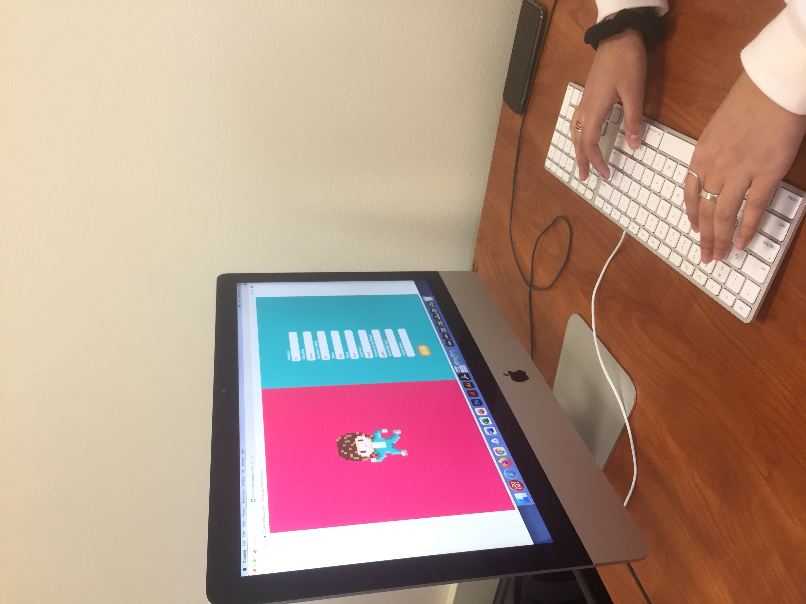
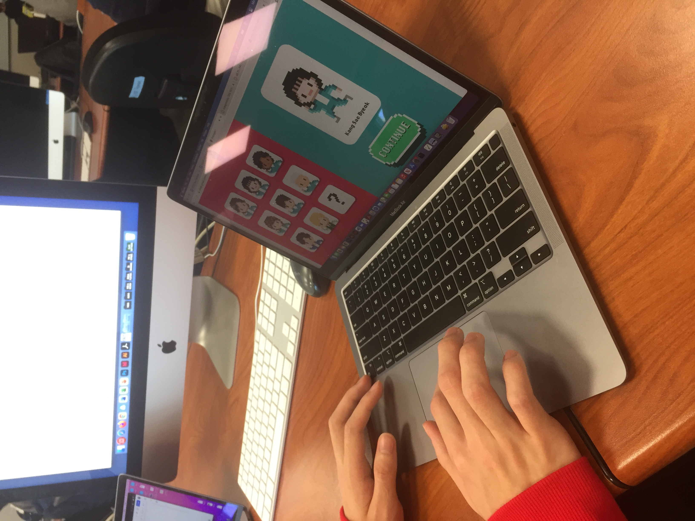
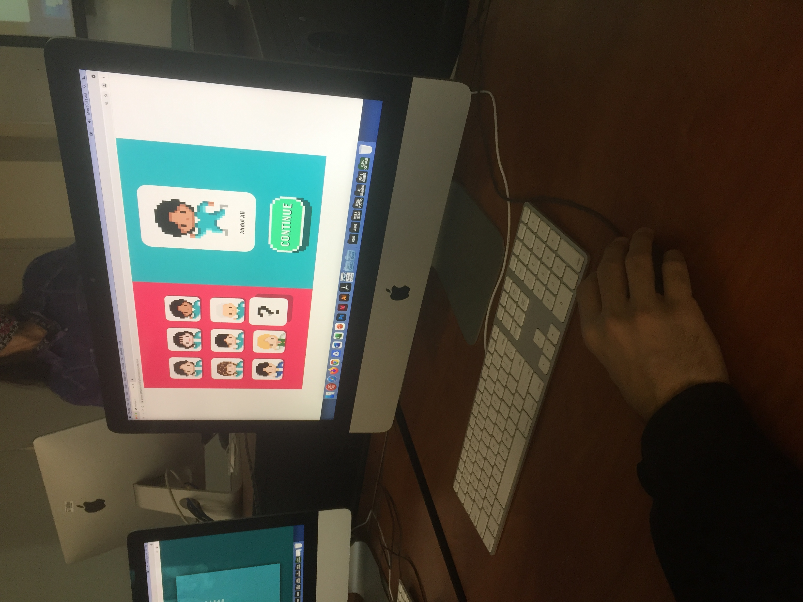

Observations
The main issue that all three users noted was the lack of a restart button at the end of the Mad Lib. They wanted to return to the starting screen without having to actually hit the restart button. They spent more time than necessary looking for a button to reset and then had to awkwardly aim the cursor to hit the reset button.

The Mad Lib script that is written at the end of the experience needs to have some sizing, spacing, and adjustments to make it look more legible. Urvi noted that the story should have a title because she didn’t know it was a Mad Lib or the final part of the experience until she stopped and read the story.

My users advised that I implement more animations and transformations for the characters and other elements when actions are executed or on hover to make the site more lively. Perhaps the most notable advice I received to make the story very interactable and replayable is to change the outcome of the story if certain characters are clicked.
